前言
過去在做IaaS VM 轉換至Microservice，總是要花費許多的人事物力，要有多少部門協同參與，又要有相關的權限做部署，其中又有轉換上的風險，可能導致失敗。Google Anthos 為了減少這樣的人工錯誤風險，增加整體轉化的效率提供一項神奇的工具Migrate for Anthos
你可以想像在VM 轉換至Kubernetes 中運行的Pod，會有那些步驟 eg. decouple code, make dockerfile, build docker image, make kubernetes object: deployment, service etc. 以上是簡單羅列，相信還會有更多的流程，而Migrate for Anthos就是簡化上述的繁鎖的步驟，因應生成的
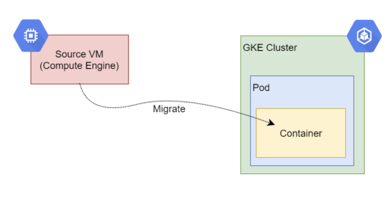
步驟說明：
完整的實驗過程，我將簡化五大步驟
- 建立GKE 平台，運行Web VM
- 準備平台間的溝通金鑰
- 安裝轉換工具migctl
- 建立轉換計劃
- 部署並測試microservice
▌1. 準備環境: VM網頁, GKE平台
step1. 轉換：Source VM
- 現正運行一個網頁伺服務名為
source-vm - 同時顯示網示網頁內容
Hello World
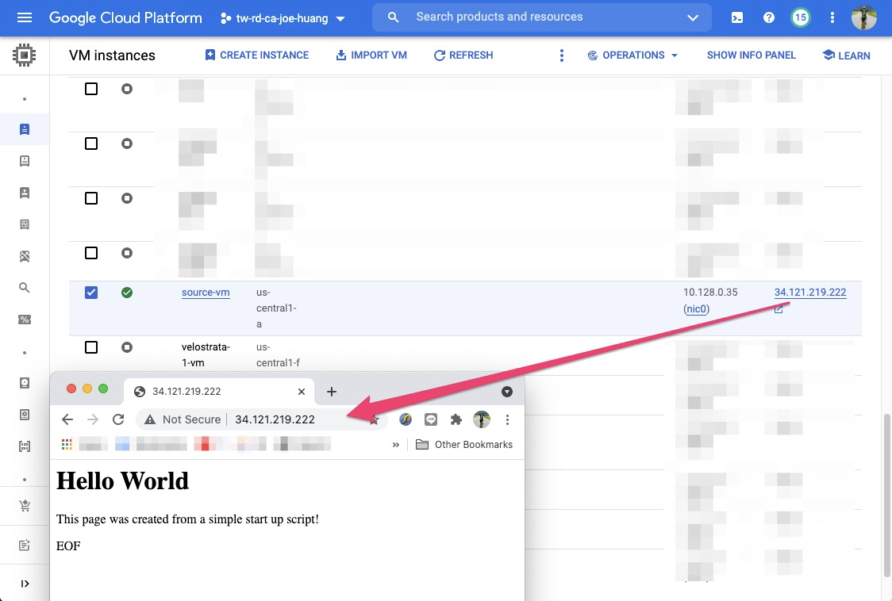
step2. GKE Cluster 部署
- 透過指令$gcloud container clusters create，或是GKE UI 建立平台皆可，指令可以參考以下
1 | gcloud container clusters create migration-processing / |
2 | --zone=us-central1-a / |
3 | --machine-type n1-standard-4 / |
4 | --image-type ubuntu/ |
5 | --num-nodes 3 / |
6 | --enable-stackdriver-kubernetes |
GKE 完成
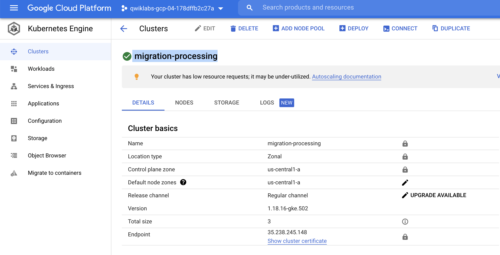
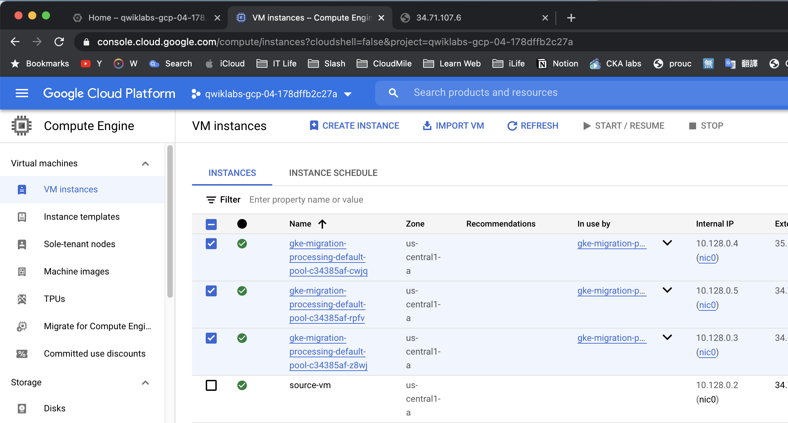
▌2. 準備 Service Account
此步驟是為了，讓Anthos Migration有權限可以拉動既有在GCP VM運行的VM
- 帳戶命名：
m4a-ce-src= Migration for Anthos - 角色授與：-role=”roles/compute.viewer”
需要的權限有
- role: roles/bigquery.admin
- role: roles/cloudbuild.builds.builder
- role: roles/cloudbuild.serviceAgent
- role: roles/container.serviceAgent
- role: roles/storage.admin
step1. 建立Service account 並授與權限 "m4a-ce-src"
1 | #1 ENV |
2 | export PROJECT_ID=$DEVSHELL_PROJECT_ID |
3 | |
4 | #2 建立平台間的溝通金鑰 |
5 | gcloud iam service-accounts create m4a-ce-src --project=$PROJECT_ID |
6 | |
7 | gcloud iam service-accounts create m4a-install \ |
8 | --project=$PROJECT_ID |
9 | |
10 | #3 付於金鑰權限 |
11 | gcloud projects add-iam-policy-binding $PROJECT_ID \ |
12 | --member="serviceAccount:m4a-ce-src@$PROJECT_ID.iam.gserviceaccount.com" \ |
13 | --role="roles/compute.storageAdmin" |
14 | |
15 | #4 Download the key file for the service account: |
16 | gcloud iam service-accounts keys create m4a-ce-src.json \ |
17 | --iam-account=m4a-ce-src@$PROJECT_ID.iam.gserviceaccount.com \ |
18 | --project=$PROJECT_ID |
執行畫面
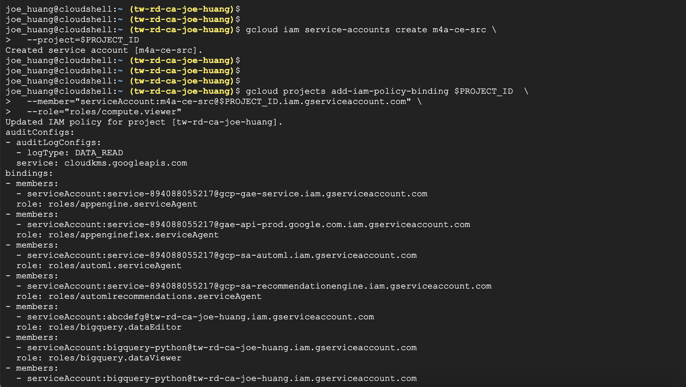
建立完的Service account檢示
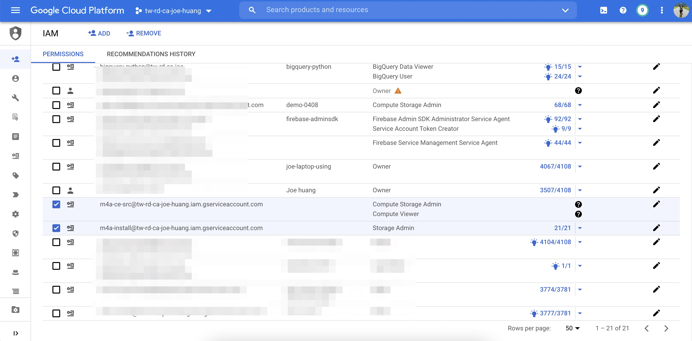
step2. 生成JSON key
產出2 json 檔分別為以下，供安裝migctl，以偶轉換時所需的權限
- m4a-install.json
- m4a-ce-src.json
m4a-install.json
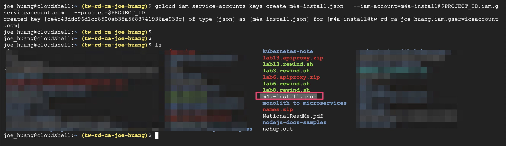
m4a-ce-src.json
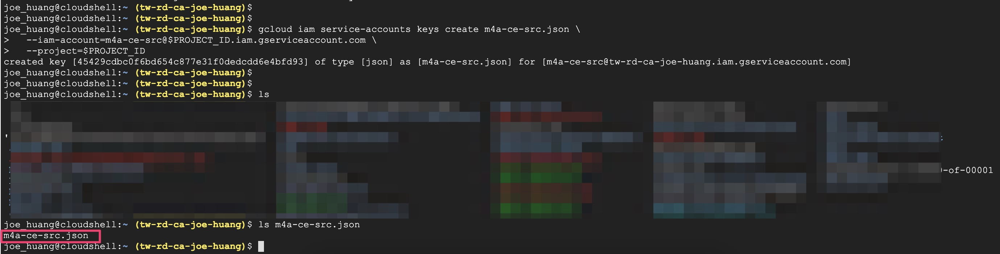
▌3. Install Migrate for Anthos
step1. migctl setup
migctl是Google Cloud Anthos 開發出來的自動化轉換工具，可以鎖定目標VM，並生成Artifacts與K8s object YAML，詳細說明mfa[1]
- 透過指令
migctl setup install，將 migctl安裝至GKE環境中
1 | #1 Get credential |
2 | gcloud container clusters get-credentials migration-processing --zone us-central1-a |
3 | |
4 | #2 Install migctl |
5 | migctl setup install --json-key=m4a-install.json |
6 | applying resources to the cluster |
7 | |
8 | #3 To make sure migctl |
9 | migctl doctor |
migctl setup install安裝過程
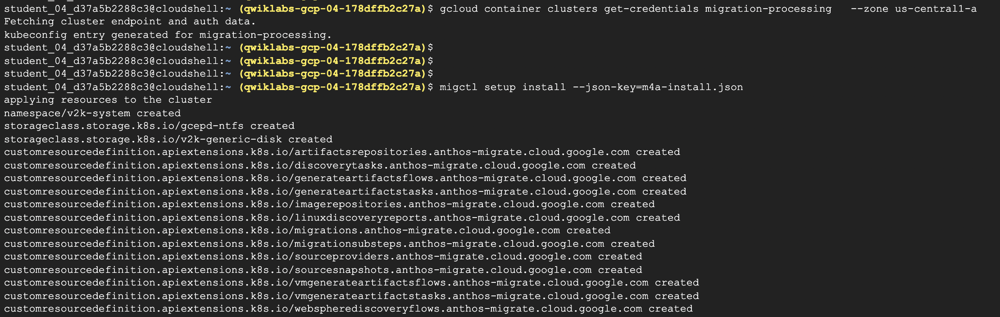
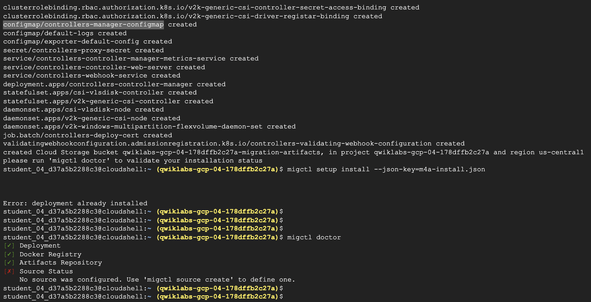
step2. 確認v2k controller
- migctl 這個工具是透過google 開發的CSI(Container Storage Interface)，來介接GCP
- 為了運行這個CSI也會額外建立
v2k-systemnamespace，這些controller, daemonset皆運行於
補充說明：Kubernetes CSI(Container Storage Interface)是用於將儲存系統與kubernetes這類容器編排系統接觸的標準介面。而使用CSI的第三方套件可以撰寫與部署自訂的儲存系統，而無需接觸Kubernetes原始碼，故Anthos 使用CNI來延伸其控制力
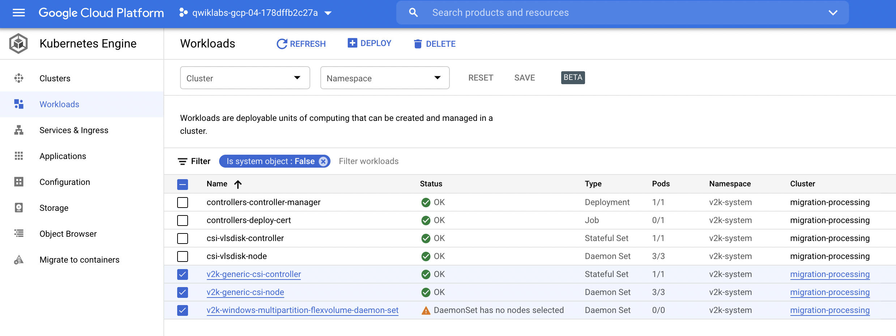
▌4. 建立 migration 計劃
- 建立的 migration object是為CRD (Kubernetes Custom Resource Definition)
- CRD是為了串起所有的轉換步驟包括: source, migration-plan, 建立artifacts等
- Aritifact的產生包括K8s deployment object
step1. 建立轉換來源位置：source-vm
先鎖定要轉換的vm，這次實驗為GCE，VM-ID 為source-vm
1 | $PROJECT_ID='YOUR PROJECT' |
2 | |
3 | #1. Create the migration source: |
4 | migctl source create ce source-vm --project $PROJECT_ID --json-key=m4a-ce-src.json |
5 | |
6 | #2. Create migration Wave(plane) |
7 | migctl migration create my-migration --source source-vm --vm-id source-vm --intent Image |
8 | migctl migration get my-migration |
9 | |
10 | #3. Migrate the VM using the migration plan |
11 | migctl migration generate-artifacts my-migration |
指令 migctl migration create my-migration 會去掃描你的VM，因此會有Discovery status，找到之後，會自動建立名為my-migration-yaml，裡面包含各項自動轉換的步驟
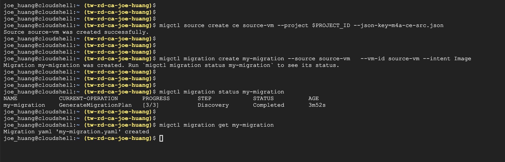
step2. 確認migctl 狀態
一旦source準備好後後，在執行$migctl doctor 就可以看到 source status 是勾勾的狀態，狀態有以下
- Deployment
- Docker registry: 準備放docker image 的家
- Artifacts repository: 估計是GCS 的權限，因為在上面有授於GCS權限
- Source status: 你指定的VM 是否正常
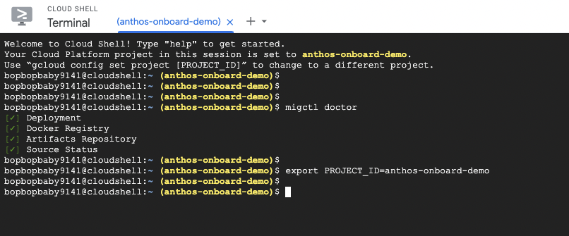
當然，你也可以透過Anthos UI Migrate to containers，來完成以上command動作，我將用另一篇文章說明
step3. 生成Artifacts
- 執行指令
$migctl migration generate-artifacts my-migration - 執行時是請Anthos tool 協助產生Artifacts
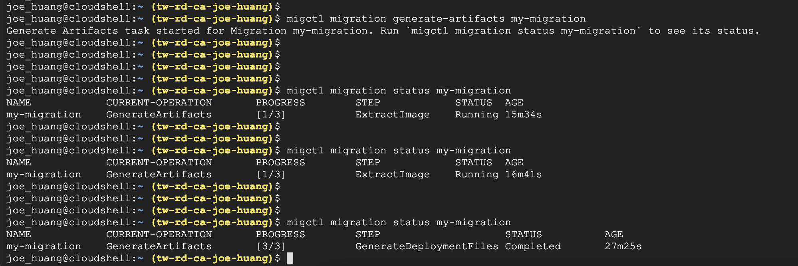
執行指令$migctl migration create my-migration
- 正式生成 dockerfile, build docker image, make kubernetes object: deployment, service 等等
- 本次實驗僅小Web-server共”4”步驟，時間共花費4分鐘左右
- 透過指令
$migctl status -v，其中 -v是獲取細部資訊
2/4 執行步驟，待4/4 全部部驟完成就能得到docker image, deployments etc.
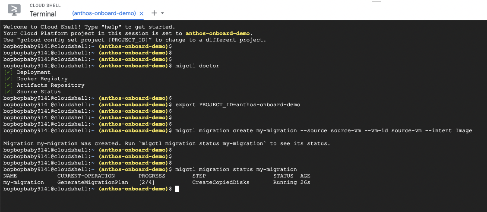
上面的$migctl status，的監控也可以換成GKE console 之下的Migrate to container UI
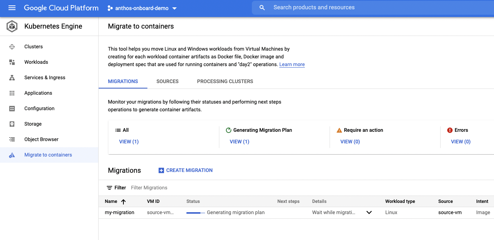
補充說明：migctl migration status -v 細看轉換步驟
1 | migctl migration status my-migration -v |
執行指令$migctl status -v，Events簡述如下，[3] 詳細說明
建立pvc，Provisioning
PersistentVolumeClaim起一個 Pod ，把剛才的PVC 掛載進來，我自可以看到
SuccessfulMountVolume訊息拉一個container image
anthos-migrate.gcr.io/vls-runimg:v1.7.0aggregatorLogging configuration : 過程的LOG，皆寫入 Cloud Logging
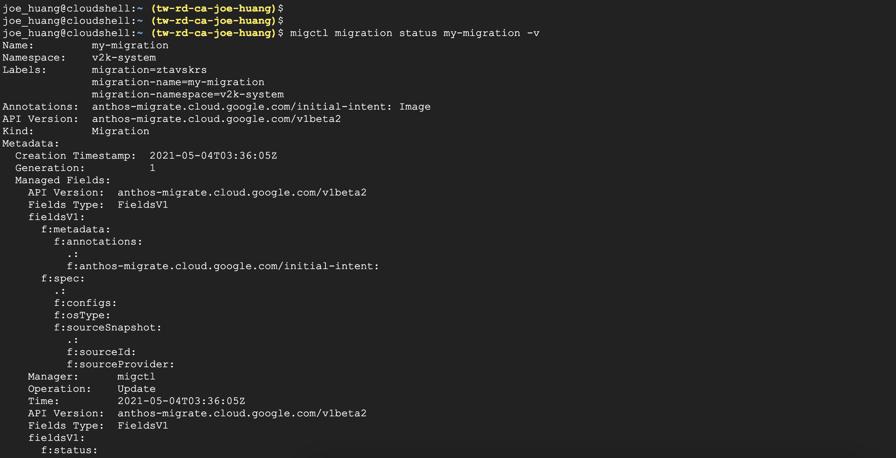
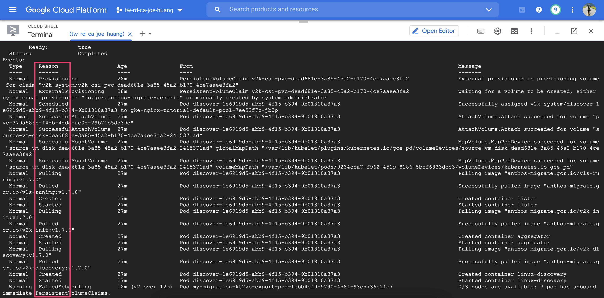
step4. 確認生成好的 Artifiacts
- 透過Monitoring tab 確認artifacts皆產出
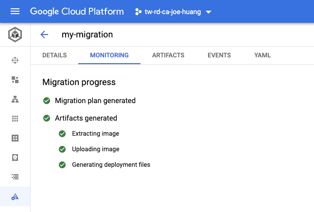
Artifacts 內容物
Dockerfile: 從你 migrated VM轉換過來的docker 映像生成檔**Container image**: 生成的docker 映像檔deployment_spec.yaml: YAML file 其中包含kind deployment, service，也是是我們要的workload, endpointmigration.yaml: 本次轉換計劃的校本，這份是給Anthos migration tool使用的，K8s 不需要它
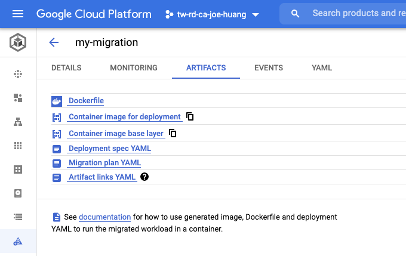
檢視docker images
- dock image會放在Google docker registry
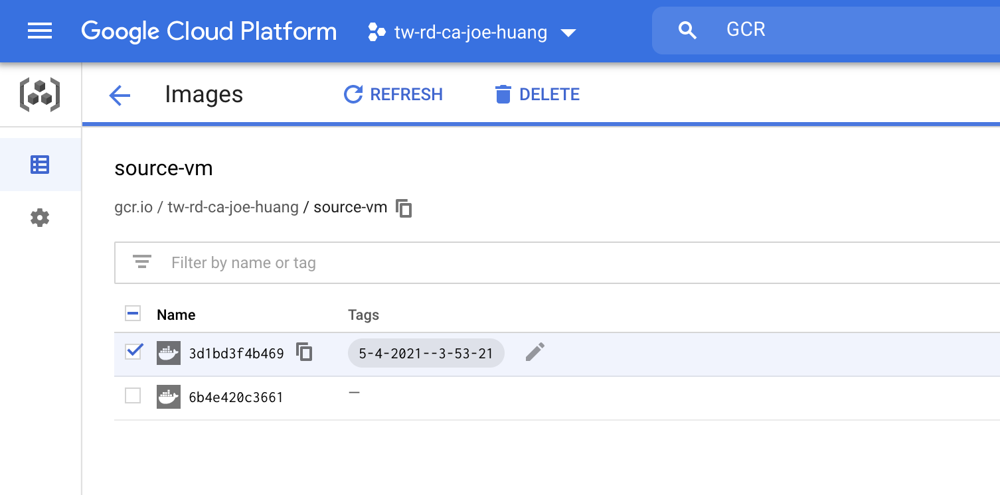
檢視deployment_spec.yaml其中
- kind deployment，幫你寫好sepc 指名至你的docker image以及需要掛載的PV
- service: 在整個yaml下方，預設建你建立internal ClusterIP
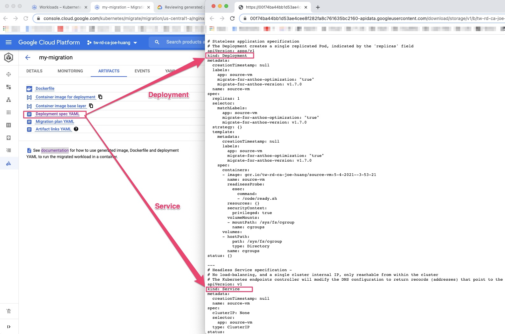
▌5. 部署Migrated workload
- 取得
deployment_spec.yaml，撰寫yaml - 執行$kubectl apply, 生成workload, endpoint
step1. 撰寫Object YAML
- 透過上面migration job 產出的deployment_spec.yaml，將拿來部署至GKE
- Deployment for source-vm 包含Deployment, Service，本實作直接採用但後面會修改service type
1 | #1 Edit YAML |
2 | vi anthos_deployment_spec.yaml |
3 | |
4 | #2 deploy workload |
5 | kubectl apply -f anthos_deployment_spec.yaml |
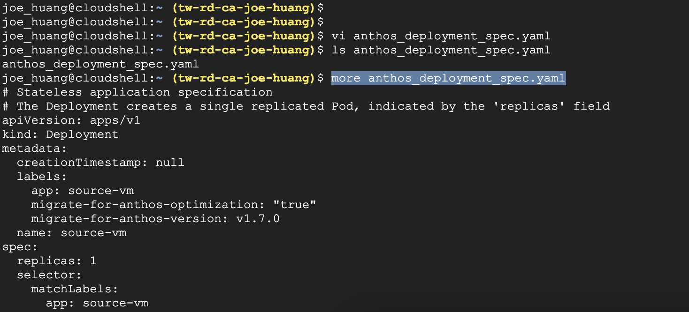
修訂Serice 為Load balance 種類
1 | #1 Original only CluserIP for internal |
2 | |
3 | apiVersion: v1 |
4 | kind: Service |
5 | metadata: |
6 | creationTimestamp: null |
7 | name: source-vm |
8 | spec: |
9 | clusterIP: None |
10 | selector: |
11 | app: source-vm |
12 | type: ClusterIP |
13 | status: |
14 | loadBalancer: {} |
15 | --- |
16 | #2 + GLB |
17 | |
18 | apiVersion: v1 |
19 | kind: Service |
20 | metadata: |
21 | name: my-service |
22 | spec: |
23 | selector: |
24 | app: source-vm |
25 | ports: |
26 | - protocol: TCP |
27 | port: 80 |
28 | targetPort: 80 |
29 | type: LoadBalancer |
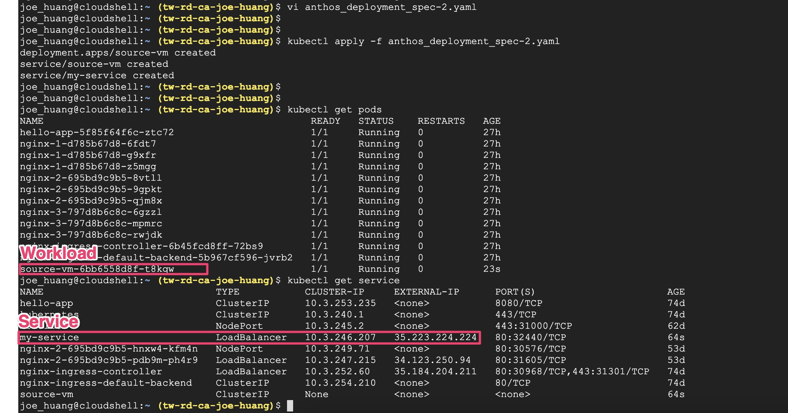
step2. 測試連線服務
- 打開browser 連線，Google Load Balace 產出來的public IP
"35.223.224.224" - 測試結跟原有的source-vm website內容一致，測試成功！
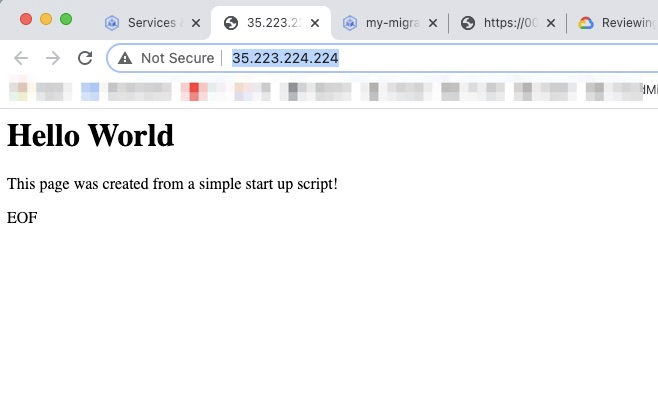
結論
看完所有的實作後，了解將容器的強大功能導入現有工作負載。Migrate for Anthos 讓ＰＮＳ以最少的人工作業，轉換現有的應用程式並移至容器中。有了 Migrate for Anthos，IT就能輕鬆翻新現有工作負載並遷移至容器；這類容器將於安全的代管 Kubernetes 服務中執行。除此microservice之外，將這些VM轉換搬遷到GKE上，享受更多雲原生 (Cloud Native)帶來的好處
Reference
[1] https://cloud.google.com/migrate/anthos/docs/installing-migrate-components#about_migctl
[2] https://cloud.google.com/migrate/anthos/docs/deploying-linux-workload-overview